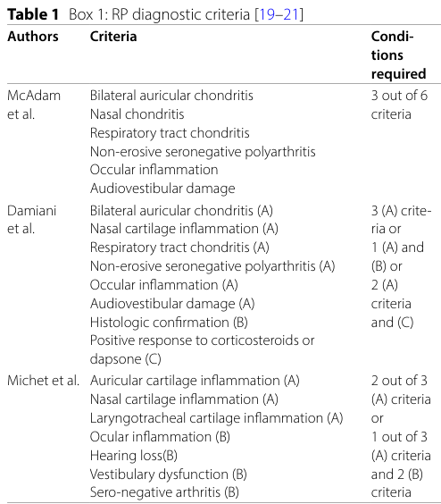

Relapsing polychondritis is a rare, immune-mediated, multisystemic disease characterized by recurrent episodes of inflammation of cartilaginous and proteoglycan-rich structures. It targets the external ear, nose, larynx and tracheobronchial tree, joints, eyes, inner ear, and — reflecting its systemic reach — the aorta and cardiac valves. The cartilage-directed arm is an HLA-DR4-associated, Th1-skewed autoimmune process, while a recently recognized subset (~8%) is driven instead by somatic UBA1 mutations (VEXAS syndrome), underscoring that "relapsing polychondritis" is likely more than one disease. Airway and cardiovascular (aortic) involvement are the principal drivers of morbidity and mortality.
Ask a research question about Relapsing Polychondritis. OpenScientist will conduct autonomous deep research using the Disorder Mechanisms Knowledge Base and PubMed literature (typically 10-30 minutes).
Do not include personal health information in your question. Questions and results are cached in your browser's local storage.
Conditions with similar clinical presentations that must be differentiated from Relapsing Polychondritis:
name: Relapsing Polychondritis
creation_date: "2026-06-17T00:00:00Z"
category: Complex
disease_term:
preferred_term: relapsing polychondritis
term:
id: MONDO:0019125
label: relapsing polychondritis
parents:
- autoimmune disease
- rare disease
description: >
Relapsing polychondritis is a rare, immune-mediated, multisystemic disease
characterized by recurrent episodes of inflammation of cartilaginous and
proteoglycan-rich structures. It targets the external ear, nose, larynx and
tracheobronchial tree, joints, eyes, inner ear, and — reflecting its systemic
reach — the aorta and cardiac valves. The cartilage-directed arm is an
HLA-DR4-associated, Th1-skewed autoimmune process, while a recently recognized
subset (~8%) is driven instead by somatic UBA1 mutations (VEXAS syndrome),
underscoring that "relapsing polychondritis" is likely more than one disease.
Airway and cardiovascular (aortic) involvement are the principal drivers of
morbidity and mortality.
synonyms:
- chronic atrophic polychondritis
- recurrent polychondritis
- polychondritis
pathophysiology:
- name: Cartilage Antigen Exposure from Triggering Insults
description: >
In a genetically predisposed host (HLA-DR4), mechanical, chemical, or
infectious insults to cartilage cause degradation of matrix proteins and the
release of normally sequestered ("cryptic") cartilage antigens, providing the
initiating antigenic stimulus that breaks immune tolerance. This is the
upstream event of the cartilage-directed autoimmune cascade.
biological_processes:
- preferred_term: Antigen processing and presentation
term:
id: GO:0019882
label: antigen processing and presentation
modifier: INCREASED
evidence:
- reference: PMID:38396936
reference_title: "Autoimmunity and Autoinflammation: Relapsing Polychondritis and VEXAS Syndrome Challenge."
supports: SUPPORT
evidence_source: HUMAN_CLINICAL
snippet: "causing the degradation of proteins and the release of cryptic cartilage antigens"
explanation: >
Describes how environmental triggers expose cryptic cartilage antigens
that initiate autoimmunity in predisposed individuals.
downstream:
- target: Cartilage-Directed Adaptive Autoimmunity
causal_link_type: DIRECT
description: >
Exposed cryptic cartilage antigens are presented to T cells and break
tolerance, driving the adaptive autoimmune response.
- name: Cartilage-Directed Adaptive Autoimmunity
description: >
Loss of tolerance to cartilage matrix produces both humoral and cellular
autoimmunity. Autoantibodies against type II/IX/XI collagen, matrilin-1, and
cartilage oligomeric matrix protein (COMP) arise in titers that track disease
activity, while CD4+ T cells drive a Th1-polarized response (IFN-γ, IL-12,
IL-2). This adaptive arm orchestrates the downstream effector inflammation.
cell_types:
- preferred_term: CD4-positive T helper cell
term:
id: CL:0000624
label: CD4-positive, alpha-beta T cell
- preferred_term: T cell
term:
id: CL:0000084
label: T cell
biological_processes:
- preferred_term: Inflammatory response
term:
id: GO:0006954
label: inflammatory response
modifier: INCREASED
evidence:
- reference: PMID:38396936
reference_title: "Autoimmunity and Autoinflammation: Relapsing Polychondritis and VEXAS Syndrome Challenge."
supports: SUPPORT
evidence_source: HUMAN_CLINICAL
snippet: "Autoantibodies anti-type II, IX and XI collagens, anti-matrilin-1 and anti-COMPs (cartilage oligomeric matrix proteins) have been highlighted in increased titers, being correlated with disease activity and considered prognostic factors."
explanation: >
Identifies the cartilage-matrix autoantigens (type II/IX/XI collagen,
matrilin-1, COMP) targeted by autoantibodies that correlate with activity.
- reference: PMID:38396936
reference_title: "Autoimmunity and Autoinflammation: Relapsing Polychondritis and VEXAS Syndrome Challenge."
supports: SUPPORT
evidence_source: HUMAN_CLINICAL
snippet: "relapsing polychondritis being considered a TH1-mediated condition"
explanation: >
Establishes the Th1-skewed adaptive immune polarization underlying the
cartilage-directed response.
- reference: PMID:41064725
reference_title: "Respiratory-Predominant Relapsing Polychondritis: The Role of Pet Scan in Making this Challenging Diagnosis."
supports: SUPPORT
evidence_source: HUMAN_CLINICAL
snippet: "Relapsing polychondritis is a rare, immune-mediated, multisystemic disease characterized by recurrent inflammation of cartilaginous and proteoglycan-rich tissues."
explanation: >
Establishes relapsing polychondritis as an immune-mediated, multisystemic
disease targeting cartilaginous and proteoglycan-rich tissues.
downstream:
- target: Innate Effector Recruitment and Complement Activation
causal_link_type: DIRECT
description: >
Adaptive autoimmunity recruits innate effector cells and activates
complement at cartilage and proteoglycan-rich sites.
- name: Innate Effector Recruitment and Complement Activation
description: >
The adaptive response recruits innate effectors — neutrophils, monocytes,
macrophages, and natural killer cells — into the perichondrium and cartilage,
accompanied by complement (C3) and immunoglobulin deposition. This effector
phase delivers the tissue-damaging machinery to both cartilaginous and
vascular targets.
cell_types:
- preferred_term: Neutrophil
term:
id: CL:0000775
label: neutrophil
- preferred_term: Monocyte
term:
id: CL:0000576
label: monocyte
- preferred_term: Macrophage
term:
id: CL:0000235
label: macrophage
- preferred_term: Natural killer cell
term:
id: CL:0000623
label: natural killer cell
biological_processes:
- preferred_term: Complement activation
term:
id: GO:0006956
label: complement activation
modifier: INCREASED
- preferred_term: Inflammatory response
term:
id: GO:0006954
label: inflammatory response
modifier: INCREASED
evidence:
- reference: PMID:38396936
reference_title: "Autoimmunity and Autoinflammation: Relapsing Polychondritis and VEXAS Syndrome Challenge."
supports: SUPPORT
evidence_source: HUMAN_CLINICAL
snippet: "Innate immunity cells, neutrophils, monocytes, macrophages, natural killer lymphocytes and eosinophils have been found in the perichondrium and cartilage, together with activated antigen-presenting cells, C3 deposits and immunoglobulins."
explanation: >
Documents innate immune infiltration of perichondrium/cartilage with
complement (C3) and immunoglobulin deposition.
downstream:
- target: Cartilage Matrix Destruction and Chondrocyte Loss
causal_link_type: DIRECT
description: >
Innate effectors and proteases degrade cartilage matrix and kill
chondrocytes at cartilaginous sites.
- target: Large-Vessel and Cardiac Inflammation
causal_link_type: DIRECT
description: >
The same effector inflammation attacks proteoglycan-rich aortic wall and
cardiac valve tissue, producing the cardiovascular disease arm.
- name: Cartilage Matrix Destruction and Chondrocyte Loss
description: >
Matrix-degrading enzymes (e.g., MMPs, cathepsins) and chondrocyte apoptosis
progressively destroy cartilage extracellular matrix at the ear, nose,
larynx, tracheobronchial tree, and joints. Recurrent destructive flares yield
the chondritis and structural deformities (saddle nose, airway malacia, ear
deformity) that define the disease.
cell_types:
- preferred_term: Chondrocyte
term:
id: CL:0000138
label: chondrocyte
biological_processes:
- preferred_term: Extracellular matrix disassembly
term:
id: GO:0022617
label: extracellular matrix disassembly
modifier: INCREASED
- preferred_term: Chondrocyte apoptosis
term:
id: GO:0006915
label: apoptotic process
modifier: INCREASED
evidence:
- reference: PMID:41968374
reference_title: "A case of relapsing polychondritis: a diagnostic challenge in recurrent cartilaginous inflammation and hearing loss-A case report."
supports: SUPPORT
evidence_source: HUMAN_CLINICAL
snippet: "Relapsing polychondritis is a rare, systemic autoimmune condition characterized by recurrent inflammation of cartilaginous tissues."
explanation: >
Recurrent destructive inflammation of cartilaginous tissues is the
defining outcome of the effector phase.
- reference: PMID:40917492
reference_title: "A Case of Relapsing Polychondritis with Multisystemic Involvement."
supports: SUPPORT
evidence_source: HUMAN_CLINICAL
snippet: "Relapsing polychondritis is a rare immunologic disorder that can involve all cartilage and proteoglycan-rich tissues."
explanation: >
Supports the broad cartilage/proteoglycan-rich tissue distribution of
matrix destruction.
- name: Large-Vessel and Cardiac Inflammation
description: >
The effector inflammation also targets proteoglycan-rich cardiovascular
structures. Inflammation of the aortic wall (aortitis) and cardiac valves
produces medial degeneration, progressive aortic dilation and aneurysm, and
valvular regurgitation. Large-vessel/aortic disease is the most serious
systemic complication and a leading cause of disease-related death through
aortic dissection or rupture.
cell_types:
- preferred_term: Macrophage
term:
id: CL:0000235
label: macrophage
- preferred_term: T cell
term:
id: CL:0000084
label: T cell
biological_processes:
- preferred_term: Inflammatory response
term:
id: GO:0006954
label: inflammatory response
modifier: INCREASED
evidence:
- reference: PMID:31768631
reference_title: "Aortic involvement in relapsing polychondritis: case-based review."
supports: SUPPORT
evidence_source: HUMAN_CLINICAL
snippet: "Relapsing polychondritis may also affect cardiac valves and large vessels with the aorta being most frequently involved."
explanation: >
Establishes cardiac valve and large-vessel (predominantly aortic)
involvement as part of the disease's systemic reach.
- reference: PMID:37839908
reference_title: "Relapsing polychondritis: Best Practice & Clinical Rheumatology."
supports: SUPPORT
evidence_source: HUMAN_CLINICAL
snippet: "it can also impact organs that aren't primarily cartilage-based, such as blood vessels, skin, inner ear, and eyes"
explanation: >
Confirms extension of inflammation beyond cartilage to blood vessels and
other proteoglycan-rich/non-cartilage organs.
- name: VEXAS-Type Somatic Myeloid Autoinflammation
description: >
A distinct, parallel mechanism operates in a subset (~8%) of patients given a
clinical diagnosis of relapsing polychondritis. Somatic mutations at
methionine-41 of UBA1 in myeloid-lineage cells dysregulate ubiquitylation and
drive a myeloid/innate-immune-predominant systemic autoinflammation (VEXAS
syndrome) that produces chondritis clinically indistinguishable from classic
RP. Unlike the HLA-driven adaptive pathway, this arm is hematopoietic and
autoinflammatory rather than autoimmune, and feeds into the same innate
effector phase.
cell_types:
- preferred_term: Monocyte
term:
id: CL:0000576
label: monocyte
- preferred_term: Neutrophil
term:
id: CL:0000775
label: neutrophil
biological_processes:
- preferred_term: Inflammatory response
term:
id: GO:0006954
label: inflammatory response
modifier: INCREASED
evidence:
- reference: PMID:38627861
reference_title: "Unveiling the clinical spectrum of relapsing polychondritis: insights into its pathogenesis, novel monogenic causes, and therapeutic strategies."
supports: SUPPORT
evidence_source: HUMAN_CLINICAL
snippet: "VEXAS syndrome is attributed to somatic mutations in methionine-41 of UBA1, the major E1 enzyme that initiates ubiquitylation."
explanation: >
Localizes the driving somatic variants to methionine-41 of UBA1, the E1
ubiquitin-activating enzyme.
- reference: PMID:37839908
reference_title: "Relapsing polychondritis: Best Practice & Clinical Rheumatology."
supports: SUPPORT
evidence_source: HUMAN_CLINICAL
snippet: "syndrome, due to mutations in UBA1 gene, identified the cause of 8 % of the patients with a clinical diagnosis of RP"
explanation: >
Quantifies the VEXAS/UBA1 contribution at ~8% of clinically diagnosed RP,
supporting that RP is more than one disease.
downstream:
- target: Innate Effector Recruitment and Complement Activation
causal_link_type: DIRECT
description: >
Mutant-UBA1 myeloid cells amplify innate effector inflammation that
converges on the same cartilage-damaging effector phase.
phenotypes:
- name: Auricular Chondritis
description: >
Recurrent inflammation of the external ear cartilage (auricular/aural
perichondritis), typically presenting with redness, swelling, and pain of the
pinna while sparing the non-cartilaginous earlobe. It is the most recognizable
manifestation of the disease.
phenotype_term:
preferred_term: Auricular chondritis
term:
id: HP:0200047
label: Chondritis of pinna
temporality: RECURRENT
evidence:
- reference: PMID:40917492
reference_title: "A Case of Relapsing Polychondritis with Multisystemic Involvement."
supports: SUPPORT
evidence_source: HUMAN_CLINICAL
snippet: "suddenly developed redness, swelling, and pain in the right auricle"
explanation: >
Documents acute auricular chondritis (redness, swelling, pain of the pinna)
as a presenting feature.
- reference: PMID:41968374
reference_title: "A case of relapsing polychondritis: a diagnostic challenge in recurrent cartilaginous inflammation and hearing loss-A case report."
supports: SUPPORT
evidence_source: HUMAN_CLINICAL
snippet: "the patient later developed bilateral aural perichondritis"
explanation: >
Bilateral aural perichondritis confirms recurrent external-ear cartilage
inflammation.
- name: Nasal Chondritis with Septal Perforation
description: >
Inflammation of the nasal cartilage that can progress to nasal septal
perforation and, over time, saddle-nose deformity.
phenotype_term:
preferred_term: Nasal septum perforation
term:
id: HP:0033434
label: Nasal septum perforation
evidence:
- reference: PMID:41968374
reference_title: "A case of relapsing polychondritis: a diagnostic challenge in recurrent cartilaginous inflammation and hearing loss-A case report."
supports: SUPPORT
evidence_source: HUMAN_CLINICAL
snippet: "nasal issues such as bloody tinged discharge and septal perforation"
explanation: >
Nasal septal perforation reflects destructive nasal cartilage inflammation.
- name: Sensorineural Hearing Loss
description: >
Audiovestibular involvement can produce sudden sensorineural hearing loss,
attributed to inflammation or vasculitis affecting the inner ear; it may be
irreversible if treatment is delayed.
phenotype_term:
preferred_term: Sensorineural hearing impairment
term:
id: HP:0000407
label: Sensorineural hearing impairment
evidence:
- reference: PMID:41968374
reference_title: "A case of relapsing polychondritis: a diagnostic challenge in recurrent cartilaginous inflammation and hearing loss-A case report."
supports: SUPPORT
evidence_source: HUMAN_CLINICAL
snippet: "a sudden onset of severe bilateral sensorineural hearing loss"
explanation: >
Documents severe bilateral sensorineural hearing loss as an
audiovestibular manifestation of relapsing polychondritis.
- name: Respiratory Tract Involvement
description: >
Inflammation of laryngeal and tracheobronchial cartilage can dominate the
clinical picture in a respiratory-predominant subtype, sometimes presenting
with isolated respiratory symptoms in the absence of auricular or nasal
chondritis. Airway involvement is a major source of morbidity and mortality.
phenotype_term:
preferred_term: Respiratory tract chondritis
term:
id: HP:0002795
label: Abnormal respiratory system physiology
evidence:
- reference: PMID:41064725
reference_title: "Respiratory-Predominant Relapsing Polychondritis: The Role of Pet Scan in Making this Challenging Diagnosis."
supports: SUPPORT
evidence_source: HUMAN_CLINICAL
snippet: "relapsing polychondritis may present with isolated respiratory symptoms and constitutional signs in the absence of auricular or nasal chondritis"
explanation: >
Establishes a respiratory-predominant presentation driven by airway
cartilage inflammation.
- reference: PMID:42279502
reference_title: "Relapsing Polychondritis Mimicking ANCA-Negative Granulomatosis with Polyangiitis: Diagnostic Value of (18)F-FDG PET/CT."
supports: SUPPORT
evidence_source: HUMAN_CLINICAL
snippet: "intense FDG uptake in the cartilaginous wall of the tracheobronchial tree, forming the classic inverted-Y sign, with bilateral costal cartilage hypermetabolism"
explanation: >
FDG-PET demonstrates active inflammation localized to tracheobronchial
cartilage (the classic inverted-Y sign), confirming airway chondritis.
- name: Costochondritis
description: >
Inflammation of the costal (rib) cartilage and costosternal junctions,
presenting with anterior chest/sternal pain; metabolically active costal
cartilage is a characteristic imaging finding that helps distinguish RP from
granulomatosis with polyangiitis.
phenotype_term:
preferred_term: Costochondritis
term:
id: HP:0100662
label: Chondritis
evidence:
- reference: PMID:42279502
reference_title: "Relapsing Polychondritis Mimicking ANCA-Negative Granulomatosis with Polyangiitis: Diagnostic Value of (18)F-FDG PET/CT."
supports: SUPPORT
evidence_source: HUMAN_CLINICAL
snippet: "intense FDG uptake in the cartilaginous wall of the tracheobronchial tree, forming the classic inverted-Y sign, with bilateral costal cartilage hypermetabolism"
explanation: >
Bilateral costal cartilage hypermetabolism documents costochondritis, a
site notably not involved in granulomatosis with polyangiitis.
- name: Saddle Nose Deformity
description: >
Progressive destruction of nasal cartilage from recurrent nasal chondritis
leads to collapse of the nasal bridge (saddle-nose deformity), a hallmark
structural sequela of relapsing polychondritis.
phenotype_term:
preferred_term: Saddle nose deformity
term:
id: HP:0005280
label: Depressed nasal bridge
clinical_course: PROGRESSIVE
evidence:
- reference: PMID:42279502
reference_title: "Relapsing Polychondritis Mimicking ANCA-Negative Granulomatosis with Polyangiitis: Diagnostic Value of (18)F-FDG PET/CT."
supports: SUPPORT
evidence_source: HUMAN_CLINICAL
snippet: "A saddle nose deformity was the only cartilaginous sign"
explanation: >
Saddle-nose deformity is documented as a cartilaginous sign of relapsing
polychondritis.
- name: Scleritis
description: >
Inflammation of the sclera is the single most common ocular manifestation of
relapsing polychondritis and can threaten vision.
phenotype_term:
preferred_term: Scleritis
term:
id: HP:0100532
label: Scleritis
evidence:
- reference: PMID:36856986
reference_title: "The ocular manifestations of relapsing polychondritis."
supports: SUPPORT
evidence_source: HUMAN_CLINICAL
snippet: "The most common ocular manifestations were scleritis (32%), episcleritis (31%) and uveitis (23%)."
explanation: >
Scleritis (~32% among RP cases with described ocular manifestations) is
the most common ocular manifestation in this systematic review.
- name: Episcleritis
description: >
Inflammation of the episclera, a frequent and typically milder form of ocular
surface inflammation in relapsing polychondritis.
phenotype_term:
preferred_term: Episcleritis
term:
id: HP:0100534
label: Episcleritis
evidence:
- reference: PMID:36856986
reference_title: "The ocular manifestations of relapsing polychondritis."
supports: SUPPORT
evidence_source: HUMAN_CLINICAL
snippet: "The most common ocular manifestations were scleritis (32%), episcleritis (31%) and uveitis (23%)."
explanation: >
Episcleritis was reported in ~31% of RP cases with described ocular
manifestations in this systematic review.
- name: Uveitis
description: >
Intraocular inflammation of the uveal tract, a less common but
vision-relevant ocular manifestation.
phenotype_term:
preferred_term: Uveitis
term:
id: HP:0000554
label: Uveitis
evidence:
- reference: PMID:36856986
reference_title: "The ocular manifestations of relapsing polychondritis."
supports: SUPPORT
evidence_source: HUMAN_CLINICAL
snippet: "The most common ocular manifestations were scleritis (32%), episcleritis (31%) and uveitis (23%)."
explanation: >
Uveitis was reported in ~23% of RP cases with described ocular
manifestations in this systematic review.
- name: Aortitis and Aortic Aneurysm
description: >
Inflammation of the aortic wall (aortitis) with medial degeneration leads to
progressive aortic dilation and aneurysm; aortic vessel involvement is the
predominant form of cardiovascular disease in relapsing polychondritis and may
be clinically silent until advanced.
phenotype_term:
preferred_term: Aortitis
term:
id: HP:6001461
label: Aortitis
clinical_course: PROGRESSIVE
evidence:
- reference: PMID:31768631
reference_title: "Aortic involvement in relapsing polychondritis: case-based review."
supports: SUPPORT
evidence_source: HUMAN_CLINICAL
snippet: "Aortic vessel involvement was the predominant type of involvement that was identified in 93 (82%) patients, while aortic valve involvement was identified in 41 patients (36%)."
explanation: >
In a systematic review of RP patients with aortic involvement, aortic
vessel disease was the predominant cardiovascular manifestation (82%).
- reference: PMID:31768631
reference_title: "Aortic involvement in relapsing polychondritis: case-based review."
supports: SUPPORT
evidence_source: HUMAN_CLINICAL
snippet: "It may be asymptomatic in 19% of the patients which warrants the importance of screening."
explanation: >
Aortic involvement is frequently asymptomatic, supporting the need for
cardiovascular screening.
- name: Aortic Regurgitation
description: >
Inflammation of the aortic valve and dilation of the aortic root produce
aortic valve regurgitation, the most common valvular lesion in relapsing
polychondritis.
phenotype_term:
preferred_term: Aortic regurgitation
term:
id: HP:0001659
label: Aortic regurgitation
evidence:
- reference: PMID:31768631
reference_title: "Aortic involvement in relapsing polychondritis: case-based review."
supports: SUPPORT
evidence_source: HUMAN_CLINICAL
snippet: "Aortic vessel involvement was the predominant type of involvement that was identified in 93 (82%) patients, while aortic valve involvement was identified in 41 patients (36%)."
explanation: >
Aortic valve involvement was identified in 36% of RP patients with
cardiovascular disease, manifesting predominantly as regurgitation.
- name: Aortic Dissection
description: >
Progressive aortic-wall weakening can culminate in aortic dissection or
rupture, the most frequent cause of cardiovascular death in relapsing
polychondritis.
phenotype_term:
preferred_term: Aortic dissection
term:
id: HP:0002647
label: Aortic dissection
evidence:
- reference: PMID:31768631
reference_title: "Aortic involvement in relapsing polychondritis: case-based review."
supports: SUPPORT
evidence_source: HUMAN_CLINICAL
snippet: "Aortic dissection or rupture was the most frequent causes of mortality."
explanation: >
Aortic dissection/rupture is identified as the leading cause of death among
RP patients with aortic involvement.
- name: Airway Malacia
description: >
Destruction of laryngotracheobronchial cartilage causes loss of airway
structural support (tracheomalacia/bronchomalacia) with dynamic airway
collapse, a debilitating and life-threatening complication that may require
interventional procedures.
phenotype_term:
preferred_term: Tracheomalacia
term:
id: HP:0002779
label: Tracheomalacia
evidence:
- reference: PMID:37221366
reference_title: "Evaluation of airway involvement and treatment in patients with relapsing polychondritis."
supports: SUPPORT
evidence_source: HUMAN_CLINICAL
snippet: "Airway involvement in relapsing polychondritis (RP) can be debilitating and life threatening, often requiring interventional procedures."
explanation: >
Airway cartilage involvement (malacia) is a debilitating, life-threatening
complication often requiring intervention.
- reference: PMID:37221366
reference_title: "Evaluation of airway involvement and treatment in patients with relapsing polychondritis."
supports: SUPPORT
evidence_source: HUMAN_CLINICAL
snippet: "Airway stenting was performed in 13 patients, all of which developed airway malacia."
explanation: >
Documents airway malacia as the lesion underlying severe airway disease
requiring stenting.
- name: Osteoporosis
description: >
Osteoporosis is among the most common items of accrued damage in relapsing
polychondritis, reflecting chronic systemic inflammation and prolonged
corticosteroid exposure.
phenotype_term:
preferred_term: Osteoporosis
term:
id: HP:0000939
label: Osteoporosis
evidence:
- reference: PMID:39020004
reference_title: "A multicenter study of long-term outcomes of relapsing polychondritis in Iran."
supports: SUPPORT
evidence_source: HUMAN_CLINICAL
snippet: "RP induced damage was developed in 21 (80.8%) patients. Ear deformity and osteoporosis were the most common RP induced damage."
explanation: >
In a multicenter outcome cohort, osteoporosis was among the most common
items of RP-induced damage.
- name: Polyarthritis
description: >
A typically non-erosive, seronegative inflammatory arthritis affecting
peripheral joints, part of the multisystem musculoskeletal involvement.
phenotype_term:
preferred_term: Arthritis
term:
id: HP:0001369
label: Arthritis
evidence:
- reference: PMID:37839908
reference_title: "Relapsing polychondritis: Best Practice & Clinical Rheumatology."
supports: SUPPORT
evidence_source: HUMAN_CLINICAL
snippet: "predominantly targets cartilaginous structures. The disease frequently affects the nose, ears, airways, and joints"
explanation: >
Identifies joints as a frequently affected site in relapsing
polychondritis alongside cartilaginous structures.
genetic:
- name: HLA-DR4 (HLA-DRB1) Susceptibility
notes: >
Idiopathic relapsing polychondritis is not Mendelian; susceptibility is
polygenic with a major contribution from the MHC class II region. HLA-DR4
(an HLA-DRB1 allele group) is the most strongly associated risk allele,
consistent with an antigen-presentation–driven, Th1-polarized autoimmune
response against cartilage matrix proteins.
gene_term:
preferred_term: HLA-DRB1
term:
id: hgnc:4948
label: HLA-DRB1
variant_origin: GERMLINE
relationship_type: RISK_FACTOR
association: HLA-DR4 confers major risk of relapsing polychondritis
evidence:
- reference: PMID:38396936
reference_title: "Autoimmunity and Autoinflammation: Relapsing Polychondritis and VEXAS Syndrome Challenge."
supports: SUPPORT
evidence_source: HUMAN_CLINICAL
snippet: "HLA-DR4 being considered an allele that confers a major risk of disease occurrence"
explanation: >
Identifies HLA-DR4 as the major genetic risk allele for relapsing
polychondritis.
- name: Somatic UBA1 Mutation (VEXAS Syndrome Overlap)
notes: >
A subset of patients, characteristically older men with concurrent
myelodysplastic syndrome, harbor somatic mutations in UBA1 (the ubiquitin-like
modifier-activating enzyme 1 gene) that define VEXAS syndrome (vacuoles, E1
enzyme, X-linked, autoinflammatory, somatic). VEXAS frequently presents with
chondritis indistinguishable from relapsing polychondritis, so somatic UBA1
testing is now recommended in this clinical context. UBA1 is not a cause of
classic idiopathic relapsing polychondritis.
gene_term:
preferred_term: UBA1
term:
id: hgnc:12469
label: UBA1
variant_origin: SOMATIC
association: VEXAS syndrome overlap with relapsing polychondritis phenotype
evidence:
- reference: PMID:41064725
reference_title: "Respiratory-Predominant Relapsing Polychondritis: The Role of Pet Scan in Making this Challenging Diagnosis."
supports: SUPPORT
evidence_source: HUMAN_CLINICAL
snippet: "Recently, it has been associated with an autoinflammatory disease known as vacuoles, E1 enzyme, X-linked, autoinflammatory, somatic syndrome."
explanation: >
Documents the recently recognized association between relapsing
polychondritis and VEXAS syndrome.
- reference: PMID:41064725
reference_title: "Respiratory-Predominant Relapsing Polychondritis: The Role of Pet Scan in Making this Challenging Diagnosis."
supports: SUPPORT
evidence_source: HUMAN_CLINICAL
snippet: "requiring detection of somatic ubiquitin-like modifier-activating enzyme 1 gene mutations"
explanation: >
Identifies somatic UBA1 (ubiquitin-like modifier-activating enzyme 1)
mutations as the molecular basis of the VEXAS overlap.
- reference: PMID:37839908
reference_title: "Relapsing polychondritis: Best Practice & Clinical Rheumatology."
supports: SUPPORT
evidence_source: HUMAN_CLINICAL
snippet: "syndrome, due to mutations in UBA1 gene, identified the cause of 8 % of the patients with a clinical diagnosis of RP"
explanation: >
Quantifies the VEXAS/UBA1 contribution at ~8% of patients clinically
diagnosed with relapsing polychondritis.
- reference: PMID:38627861
reference_title: "Unveiling the clinical spectrum of relapsing polychondritis: insights into its pathogenesis, novel monogenic causes, and therapeutic strategies."
supports: SUPPORT
evidence_source: HUMAN_CLINICAL
snippet: "VEXAS syndrome is attributed to somatic mutations in methionine-41 of UBA1, the major E1 enzyme that initiates ubiquitylation."
explanation: >
Localizes the recurrent somatic variants to methionine-41 of UBA1, the E1
ubiquitin-activating enzyme.
- reference: PMID:38167209
reference_title: "Dynamic monitoring of UBA1 somatic mutations in patients with relapsing polychondritis."
supports: SUPPORT
evidence_source: HUMAN_CLINICAL
snippet: "Sanger sequencing detected the somatic UBA1 variant c.122T > C (p.Met41Thr) in two male patients"
explanation: >
Documents the specific recurrent somatic variant c.122T>C (p.Met41Thr) in
RP patients with VEXAS.
treatments:
- name: Corticosteroid Therapy
description: >
Systemic corticosteroids are the mainstay for controlling acute chondritis
flares; milder localized episodes may respond to short courses of oral or
topical corticosteroids, while severe organ-threatening disease requires
higher-dose systemic therapy and steroid-sparing immunosuppression.
therapeutic_modality: SMALL_MOLECULE
treatment_term:
preferred_term: Pharmacotherapy
term:
id: NCIT:C15986
label: Pharmacotherapy
therapeutic_agent:
- preferred_term: corticosteroid
term:
id: CHEBI:50858
label: corticosteroid
evidence:
- reference: PMID:41968374
reference_title: "A case of relapsing polychondritis: a diagnostic challenge in recurrent cartilaginous inflammation and hearing loss-A case report."
supports: SUPPORT
evidence_source: HUMAN_CLINICAL
snippet: "managed effectively with a short course of oral or topical corticosteroids"
explanation: >
Demonstrates corticosteroid responsiveness of chondritis flares.
- reference: PMID:42279502
reference_title: "Relapsing Polychondritis Mimicking ANCA-Negative Granulomatosis with Polyangiitis: Diagnostic Value of (18)F-FDG PET/CT."
supports: SUPPORT
evidence_source: HUMAN_CLINICAL
snippet: "Corticosteroid therapy elicited prompt clinical and biochemical response."
explanation: >
Confirms rapid clinical and biochemical response to corticosteroids in
active disease.
- name: Methotrexate
description: >
Methotrexate is a conventional immunosuppressant used as a steroid-sparing
agent. Because no randomized trial exists for relapsing polychondritis,
treatment is empirical; methotrexate is among the agents with the most robust
supporting data, with a pooled response rate of ~56% across observational
studies.
therapeutic_modality: SMALL_MOLECULE
treatment_term:
preferred_term: Pharmacotherapy
term:
id: NCIT:C15986
label: Pharmacotherapy
therapeutic_agent:
- preferred_term: methotrexate
term:
id: CHEBI:44185
label: methotrexate
evidence:
- reference: PMID:35238756
reference_title: "Treatment of relapsing polychondritis: a systematic review."
supports: SUPPORT
evidence_source: HUMAN_CLINICAL
snippet: "While MTX had slightly less efficacy, it is one of the drugs for which data are the most robust."
explanation: >
Systematic review identifies methotrexate as the treatment with the most
robust supporting evidence (pooled response rate ~56%).
- reference: PMID:35238756
reference_title: "Treatment of relapsing polychondritis: a systematic review."
supports: SUPPORT
evidence_source: HUMAN_CLINICAL
snippet: "no randomised clinical trial has been conducted to date and treatment remains empirical"
explanation: >
Establishes that relapsing polychondritis treatment is empirical, lacking
randomized trial evidence.
- name: TNF Inhibitor Therapy
description: >
Tumor necrosis factor inhibitors (TNFi) are among the biologic agents
associated with the best outcomes in relapsing polychondritis, with a pooled
response rate of ~64%.
therapeutic_modality: MONOCLONAL_ANTIBODY
treatment_term:
preferred_term: Pharmacotherapy
term:
id: NCIT:C15986
label: Pharmacotherapy
evidence:
- reference: PMID:35238756
reference_title: "Treatment of relapsing polychondritis: a systematic review."
supports: SUPPORT
evidence_source: HUMAN_CLINICAL
snippet: "ABT, TCZ and TNFi were the drugs associated with the best outcomes."
explanation: >
Systematic review identifies TNF inhibitors among the biologics with the
best outcomes (pooled response rate ~64%).
- reference: PMID:37221366
reference_title: "Evaluation of airway involvement and treatment in patients with relapsing polychondritis."
supports: SUPPORT
evidence_source: HUMAN_CLINICAL
snippet: "A significantly higher survival rate was seen in patients administered biologics than without"
explanation: >
In airway-involved RP, biologic therapy was associated with significantly
improved survival.
- reference: PMID:37221366
reference_title: "Evaluation of airway involvement and treatment in patients with relapsing polychondritis."
supports: SUPPORT
evidence_source: HUMAN_CLINICAL
snippet: "The early administration of biologics shows promise in preventing severe airway disorders that require airway stenting."
explanation: >
Supports early biologic therapy to prevent severe airway disease and avoid
stenting.
- name: Tocilizumab
description: >
Tocilizumab, an anti-interleukin-6 receptor monoclonal antibody, is among the
biologics associated with the best outcomes in relapsing polychondritis
(pooled response rate ~66%).
therapeutic_modality: MONOCLONAL_ANTIBODY
treatment_term:
preferred_term: Pharmacotherapy
term:
id: NCIT:C15986
label: Pharmacotherapy
therapeutic_agent:
- preferred_term: tocilizumab
term:
id: NCIT:C84217
label: Tocilizumab
evidence:
- reference: PMID:35238756
reference_title: "Treatment of relapsing polychondritis: a systematic review."
supports: SUPPORT
evidence_source: HUMAN_CLINICAL
snippet: "ABT, TCZ and TNFi were the drugs associated with the best outcomes."
explanation: >
Tocilizumab (TCZ) is identified among the biologics with the best outcomes
(pooled response rate ~66%).
- name: Abatacept
description: >
Abatacept (a CTLA4-Ig T-cell costimulation modulator) showed the highest
pooled response rate (~72%) in the systematic review, though this estimate
rests on a small number of treated patients.
therapeutic_modality: OTHER
treatment_term:
preferred_term: Pharmacotherapy
term:
id: NCIT:C15986
label: Pharmacotherapy
therapeutic_agent:
- preferred_term: abatacept
term:
id: NCIT:C28898
label: Abatacept
evidence:
- reference: PMID:35238756
reference_title: "Treatment of relapsing polychondritis: a systematic review."
supports: SUPPORT
evidence_source: HUMAN_CLINICAL
snippet: "ABT, TCZ and TNFi were the drugs associated with the best outcomes."
explanation: >
Abatacept (ABT) is identified among the biologics with the best outcomes
(pooled response rate ~72%).
- reference: PMID:35238756
reference_title: "Treatment of relapsing polychondritis: a systematic review."
supports: PARTIAL
evidence_source: HUMAN_CLINICAL
snippet: "ABT efficacy must be interpreted in light of the small number of patients treated."
explanation: >
Notes the small sample size limiting confidence in the abatacept estimate.
- name: Airway Interventional Procedures
description: >
For severe airway involvement refractory to medical therapy, interventional
procedures (airway stenting, tracheostomy, non-invasive ventilation) provide
structural support. Stenting is reserved as a last resort because it carries
high rates of complications (granulation tissue, mucostasis) and is associated
with worse survival; early biologic therapy is preferred to avoid it.
action_category: THERAPEUTIC
treatment_term:
preferred_term: airway interventional procedure
term:
id: MAXO:0000004
label: surgical procedure
target_phenotypes:
- preferred_term: Tracheomalacia
term:
id: HP:0002779
label: Tracheomalacia
evidence:
- reference: PMID:37221366
reference_title: "Evaluation of airway involvement and treatment in patients with relapsing polychondritis."
supports: SUPPORT
evidence_source: HUMAN_CLINICAL
snippet: "Airway stenting was performed in 13 patients, all of which developed airway malacia."
explanation: >
Airway stenting is used for severe airway malacia in relapsing
polychondritis.
- reference: PMID:37221366
reference_title: "Evaluation of airway involvement and treatment in patients with relapsing polychondritis."
supports: PARTIAL
evidence_source: HUMAN_CLINICAL
snippet: "Airway involvement in relapsing polychondritis (RP) can be debilitating and life threatening, often requiring interventional procedures."
explanation: >
Establishes the need for interventional airway procedures in severe,
life-threatening airway disease.
clinical_trials:
- name: NCT06873100
phase: PHASE_II
status: RECRUITING
description: >
Randomized trial of the JAK inhibitor upadacitinib versus conventional
therapy (corticosteroids plus immunosuppressants) for relapsing
polychondritis, with disease-activity and immunological endpoints over 24
weeks.
target_phenotypes:
- preferred_term: Auricular chondritis
term:
id: HP:0200047
label: Chondritis of pinna
evidence:
- reference: clinicaltrials:NCT06873100
supports: SUPPORT
evidence_source: HUMAN_CLINICAL
snippet: "The goal of this clinical trial is to learn if drug Upadacitinib works to treat relapsing polychondritis in adults."
explanation: >
Confirms an active randomized trial evaluating upadacitinib (a JAK
inhibitor) as a targeted therapy for relapsing polychondritis.
- name: NCT04077736
phase: PHASE_I
status: COMPLETED
description: >
Pilot study of low-dose interleukin-2 to expand regulatory T cells in active
relapsing polychondritis, motivated by the Th1-skewed cytokine profile of the
disease.
target_phenotypes:
- preferred_term: Auricular chondritis
term:
id: HP:0200047
label: Chondritis of pinna
evidence:
- reference: clinicaltrials:NCT04077736
supports: SUPPORT
evidence_source: HUMAN_CLINICAL
snippet: "The investigators hypothesized that low-dose IL-2 could be a novel therapy in active RP patients."
explanation: >
Documents a completed pilot trial of low-dose IL-2 as an immunomodulatory
therapy targeting regulatory T cells.
- reference: clinicaltrials:NCT04077736
supports: SUPPORT
evidence_source: HUMAN_CLINICAL
snippet: "which suggested that RP may be a Th1-mediated disease process"
explanation: >
Corroborates the Th1-mediated immunopathology that motivates Treg-directed
therapy.
progression:
- phase: Disease course
notes: >
Relapsing polychondritis follows heterogeneous courses; in a multicenter
cohort roughly one third were relapsing-remitting, with substantial fractions
monophasic or persistently active.
evidence:
- reference: PMID:39020004
reference_title: "A multicenter study of long-term outcomes of relapsing polychondritis in Iran."
supports: SUPPORT
evidence_source: HUMAN_CLINICAL
snippet: "Regarding the disease course, 34.6% of patients had a relapsing-remitting course, 42.3% had a monophasic course, and 23.1% had an always-active course."
explanation: >
Quantifies the distribution of disease-course patterns in a multicenter
outcome cohort.
- phase: Remission and damage accrual
notes: >
Symptom control and sustained remission are achievable over weeks to months,
and medication-free remission occurs in a minority; however, accrued damage
develops in the majority of patients.
evidence:
- reference: PMID:39020004
reference_title: "A multicenter study of long-term outcomes of relapsing polychondritis in Iran."
supports: SUPPORT
evidence_source: HUMAN_CLINICAL
snippet: "Median time to control of symptoms and sustained remission were 5 and 23 weeks, respectively."
explanation: >
Documents the typical time course to symptom control and sustained
remission.
- reference: PMID:39020004
reference_title: "A multicenter study of long-term outcomes of relapsing polychondritis in Iran."
supports: SUPPORT
evidence_source: HUMAN_CLINICAL
snippet: "RP induced damage was developed in 21 (80.8%) patients. Ear deformity and osteoporosis were the most common RP induced damage."
explanation: >
Shows that irreversible damage accrues in most patients despite treatment.
differential_diagnoses:
- name: VEXAS Syndrome
description: >
A somatic UBA1-driven autoinflammatory disease (vacuoles, E1 enzyme, X-linked,
autoinflammatory, somatic) that frequently presents with chondritis mimicking
relapsing polychondritis, especially in older men with hematologic features
(cytopenias, myelodysplastic syndrome, marrow vacuolization).
distinguishing_features:
- Somatic UBA1 methionine-41 mutation in myeloid cells (test by ddPCR if Sanger negative)
- Older male predominance with myelodysplastic syndrome / marrow vacuoles
- Often treatment-refractory autoinflammation
evidence:
- reference: PMID:38396936
reference_title: "Autoimmunity and Autoinflammation: Relapsing Polychondritis and VEXAS Syndrome Challenge."
supports: SUPPORT
evidence_source: HUMAN_CLINICAL
snippet: "The clinical manifestations of VEXAS syndrome include an inflammatory phenotype often similar to that of RP, which raises diagnostic problems."
explanation: >
VEXAS produces an RP-like inflammatory phenotype, creating a key
diagnostic challenge that mandates UBA1 testing.
- name: Granulomatosis with Polyangiitis
description: >
An ANCA-associated vasculitis that can mimic relapsing polychondritis,
particularly with saddle-nose deformity and diffuse tracheobronchial wall
thickening; both may be ANCA-negative, creating diagnostic overlap.
distinguishing_features:
- Costal cartilage involvement favors RP (a site not involved in GPA)
- Renal, sinus, and orbital involvement favor GPA
- ANCA may be positive in GPA but can be negative in both
evidence:
- reference: PMID:42279502
reference_title: "Relapsing Polychondritis Mimicking ANCA-Negative Granulomatosis with Polyangiitis: Diagnostic Value of (18)F-FDG PET/CT."
supports: SUPPORT
evidence_source: HUMAN_CLINICAL
snippet: "Both RP and granulomatosis with polyangiitis (GPA) can cause diffuse tracheobronchial wall thickening on computed tomography (CT) and may be seronegative for anti-neutrophil cytoplasmic antibody (ANCA), creating a diagnostic impasse."
explanation: >
Establishes the tracheobronchial/ANCA-negative overlap that makes GPA a
key differential.
- reference: PMID:42279502
reference_title: "Relapsing Polychondritis Mimicking ANCA-Negative Granulomatosis with Polyangiitis: Diagnostic Value of (18)F-FDG PET/CT."
supports: SUPPORT
evidence_source: HUMAN_CLINICAL
snippet: "with bilateral costal cartilage hypermetabolism (a site not involved in GPA)"
explanation: >
Costal cartilage involvement is a discriminating feature favoring RP over
GPA.
discussions:
- discussion_id: gap_rp_etiology_trigger
prompt: >-
What are the specific environmental/physical triggers and host factors that
initiate cartilage antigen exposure and break tolerance in relapsing
polychondritis, and why does this occur only in a subset of HLA-DR4 carriers?
kind: KNOWLEDGE_GAP
status: OPEN
attaches_to:
- pathophysiology#Cartilage Antigen Exposure from Triggering Insults
rationale: >-
HLA-DR4 association and a trigger-then-cryptic-antigen model are established,
but the inciting triggers are only hypothesized (trauma, chemical, infection)
and no quantitative gene-environment studies exist. The mechanism upstream of
autoimmunity therefore remains the least-resolved step of the cascade.
evidence:
- reference: PMID:38396936
reference_title: "Autoimmunity and Autoinflammation: Relapsing Polychondritis and VEXAS Syndrome Challenge."
supports: SUPPORT
evidence_source: HUMAN_CLINICAL
snippet: "The pathogenesis of the disease is complex and still incompletely elucidated."
explanation: >
Authors explicitly note the pathogenesis is incompletely elucidated.
- discussion_id: controversy_rp_more_than_one_disease
prompt: >-
Is "relapsing polychondritis" a single entity, or an umbrella over distinct
diseases — an HLA-driven adaptive autoimmune chondritis versus a somatic
UBA1-driven (VEXAS) autoinflammatory chondritis — that should be classified
and treated separately?
kind: CONTROVERSY
status: OPEN
attaches_to:
- pathophysiology#VEXAS-Type Somatic Myeloid Autoinflammation
- pathophysiology#Cartilage-Directed Adaptive Autoimmunity
rationale: >-
The discovery that somatic UBA1 mutations account for ~8% of clinically
diagnosed RP (the former "hematologic subgroup") demonstrates that the
clinical label aggregates mechanistically distinct diseases with different
demographics, prognosis, and treatment response. How to formally partition
the entity is unresolved.
evidence:
- reference: PMID:37839908
reference_title: "Relapsing polychondritis: Best Practice & Clinical Rheumatology."
supports: SUPPORT
evidence_source: HUMAN_CLINICAL
snippet: "proof of concept that RP is likely more than one disease"
explanation: >
The VEXAS discovery is framed as proof that RP is more than one disease.
- discussion_id: gap_rp_biomarker_and_therapy
prompt: >-
Can validated disease-activity biomarkers and randomized-trial-supported,
approved therapies be established for relapsing polychondritis, given the
current absence of specific markers and reliance on empirical treatment?
kind: KNOWLEDGE_GAP
status: OPEN
attaches_to:
- pathophysiology#Cartilage-Directed Adaptive Autoimmunity
rationale: >-
Management is empirical with no approved therapies and no validated severity
metrics; this limits both clinical care and trial design. Emerging diagnostic
models and the upadacitinib randomized trial may begin to close this gap.
evidence:
- reference: PMID:35238756
reference_title: "Treatment of relapsing polychondritis: a systematic review."
supports: SUPPORT
evidence_source: HUMAN_CLINICAL
snippet: "no randomised clinical trial has been conducted to date and treatment remains empirical"
explanation: >
No randomized trials exist and treatment remains empirical.
- reference: PMID:37839908
reference_title: "Relapsing polychondritis: Best Practice & Clinical Rheumatology."
supports: SUPPORT
evidence_source: HUMAN_CLINICAL
snippet: "there are no approved metrics to gauge the disease's severity"
explanation: >
No approved severity metrics exist, a gap for both care and trials.
- discussion_id: gap_rp_cardiovascular_screening
prompt: >-
What is the optimal strategy (modality and interval) for screening
asymptomatic relapsing polychondritis patients for aortic and valvular
involvement, given that a fifth of aortic involvement is silent yet
dissection/rupture is a leading cause of death?
kind: KNOWLEDGE_GAP
status: OPEN
attaches_to:
- pathophysiology#Large-Vessel and Cardiac Inflammation
rationale: >-
Aortic involvement is frequently asymptomatic but carries high mortality from
dissection/rupture, so screening is clearly warranted; however, no
evidence-based screening protocol (which imaging, how often, in whom) has been
defined.
evidence:
- reference: PMID:31768631
reference_title: "Aortic involvement in relapsing polychondritis: case-based review."
supports: SUPPORT
evidence_source: HUMAN_CLINICAL
snippet: "It may be asymptomatic in 19% of the patients which warrants the importance of screening."
explanation: >
Silent aortic involvement in ~19% motivates screening, but the optimal
protocol is undefined.
RP is a systemic, relapsing inflammatory disorder involving cartilage and proteoglycan-rich tissues. A contemporary review abstract states: “Relapsing polychondritis is a rare multisystem disease involving cartilaginous and proteoglycan-rich structures.” (Bica et al., 2024-04; https://doi.org/10.1186/s42358-024-00365-z) (bica2024unveilingtheclinical pages 1-2)
The retrieved evidence set contains explicit MeSH and EFO identifiers, but not ICD-10/ICD-11/Orphanet/MONDO codes. The table below consolidates what was retrievable and flags gaps for later knowledge-base curation.
| Identifier system | Identifier/code | Label | Source (URL + publication/record date if available) | Notes |
|---|---|---|---|---|
| MeSH | D011081 | Polychondritis, Relapsing | ClinicalTrials.gov record NCT06873100, Efficacy, Safety and Immunological Evaluation of Upadacitinib for Relapsing Polychondritis; first posted 2025-03-12; https://clinicaltrials.gov/study/NCT06873100 (NCT06873100 chunk 1) | Explicit MeSH term/ID present in trial metadata; canonical disease label in MeSH-formatted form. |
| EFO | EFO_1001148 | relapsing polychondritis | Open Targets query result for “Relapsing polychondritis”; cited platform paper: Buniello et al., 2025; https://platform.opentargets.org/ (OpenTargets Search: Relapsing polychondritis) | Disease identifier returned by Open Targets; no associated targets were found in the retrieved snapshot. |
| Abbreviation / synonym | RP | Relapsing polychondritis | Mertz et al., 2023, Best Practice & Research Clinical Rheumatology; 2023; DOI not fully available in retrieved text (mertz2023bestpractice& pages 12-14, mertz2023bestpractice& pages 15-15) | Common abbreviation used throughout recent reviews and trial records. |
| Related term / subset label | — | VEXAS-relapsing polychondritis | Mertz et al., 2023, Best Practice & Research Clinical Rheumatology; 2023; DOI not fully available in retrieved text (mertz2023bestpractice& pages 12-14) | Used for the UBA1/VEXAS-associated RP subset; reflects an overlapping clinicogenetic entity rather than a formal ontology synonym. |
| Related syndrome term | — | MAGIC syndrome | Mertz et al., 2023, Best Practice & Research Clinical Rheumatology; 2023; DOI not fully available in retrieved text (mertz2023bestpractice& pages 12-14) | “Mouth and genital ulcers with inflamed cartilage”; overlap syndrome relevant to RP differential diagnosis/phenotyping, not a direct synonym. |
| ICD-10 | not retrieved in provided sources | — | Not retrieved in the provided evidence set (NCT06873100 chunk 1, OpenTargets Search: Relapsing polychondritis) | Should be verified in ICD source databases before KB ingestion. |
| ICD-11 | not retrieved in provided sources | — | Not retrieved in the provided evidence set (NCT06873100 chunk 1, OpenTargets Search: Relapsing polychondritis) | Should be verified in ICD source databases before KB ingestion. |
| Orphanet | not retrieved in provided sources | — | Not retrieved in the provided evidence set (NCT06873100 chunk 1, OpenTargets Search: Relapsing polychondritis) | ORPHA code was requested but not available in the retrieved sources. |
| MONDO | not retrieved in provided sources | — | Not retrieved in the provided evidence set (NCT06873100 chunk 1, OpenTargets Search: Relapsing polychondritis) | MONDO cross-reference should be added from MONDO/OLS when available. |
Table: This table compiles the key identifiers and commonly used names for relapsing polychondritis that were explicitly retrievable from the provided sources. It also flags major ontology/code systems that were requested but not recovered in the evidence set, helping identify curation gaps for a knowledge-base entry.
Evidence source type: identifiers are from ClinicalTrials.gov metadata (trial registry) and Open Targets (ontology mapping), plus review terminology usage. (NCT06873100 chunk 1, OpenTargets Search: Relapsing polychondritis, mertz2023bestpractice& pages 12-14)
Historically, RP has been described under multiple names. A 2024 review notes that after early descriptions, it was called “diffuse perichondritis, chondromalacia, chronic atrophic polychondritis, diffuse chondrolysis, and dyschondroplasia,” and that the term “relapsing polychondritis” was introduced in 1960 to emphasize episodic course. (bica2024unveilingtheclinical pages 1-2)
Evidence in this report is aggregated from cohort studies, retrospective multicenter analyses, systematic review/case compilation, clinical trial registry entries, and narrative reviews (not single EHR-only cases). (gallagher2023theocularmanifestations pages 1-5, jafarpour2024amulticenterstudy pages 3-4, handa2023evaluationofairway pages 1-2, NCT06873100 chunk 1)
The etiology is not fully established; current models support genetic susceptibility plus environmental/physical triggers leading to cartilage antigen exposure and immune-mediated tissue injury. A 2024 mechanistic review states that triggers (mechanical/chemical/infectious) may promote “degradation of proteins and the release of cryptic cartilage antigens,” in genetically predisposed individuals. (cardoneanu2024autoimmunityandautoinflammation pages 1-3)
Genetic risk (HLA): Multiple sources emphasize HLA associations. HLA-DR4 is highlighted as a major risk allele. (cardoneanu2024autoimmunityandautoinflammation pages 1-3, cardoneanu2024autoimmunityandautoinflammation pages 3-4)
Monogenic/somatic risk subset (VEXAS/UBA1): A major recent development is recognition that a subset of clinically diagnosed RP represents VEXAS syndrome (somatic UBA1 variants in myeloid lineage), with different clinical/laboratory profile and prognosis. (mertz2023bestpractice& pages 7-9, duan2024dynamicmonitoringof pages 1-3)
Demographic patterns: Reviews describe onset typically in mid-adulthood (often 40–60) with female predominance in some datasets, while VEXAS-associated chondritis is male-predominant due to X-linked somatic mosaicism. (mertz2023bestpractice& pages 1-3, cardoneanu2024autoimmunityandautoinflammation pages 1-3)
No explicit genetic or environmental protective factors were retrievable from the provided evidence set. (Evidence gap)
A plausible interaction is that genetic susceptibility (HLA) plus external triggers (trauma, exposures, infections) promotes antigen exposure and immune activation; however, no quantitative GxE studies were retrievable in this evidence set. (cardoneanu2024autoimmunityandautoinflammation pages 1-3)
RP manifests with episodic chondritis (auricular, nasal, airway), arthritis, ocular inflammation, audiovestibular involvement, and systemic/vascular involvement in subsets. (bica2024unveilingtheclinical pages 1-2, gallagher2023theocularmanifestations pages 1-5, mertz2023bestpractice& pages 7-9)
The following table consolidates phenotype frequencies (and selected damage/outcome rates) from 2023–2024 sources and maps them to suggested HPO terms.
| Clinical domain/phenotype | Key quantitative data (with % and cohort) | Suggested HPO term(s) | Key source (PMID/DOI/URL, year) |
|---|---|---|---|
| Auricular chondritis / pinna involvement | Present in 20% at disease onset and 90% during the disease course in RP review data; in the Iranian multicenter cohort, auricular chondritis occurred in ~86% of patients (bica2024unveilingtheclinical pages 1-2, jafarpour2024amulticenterstudy pages 6-7) | HP:0008602 Abnormality of the external ear; HP:0010708 Auricular cartilage inflammation | Bica et al., 2024, doi:10.1186/s42358-024-00365-z, https://doi.org/10.1186/s42358-024-00365-z; Jafarpour et al., 2024, doi:10.1038/s41598-024-67530-8, https://doi.org/10.1038/s41598-024-67530-8 |
| Nasal chondritis / nasal cartilage involvement | Nasal chondritis occurred in ~55% of the Iranian multicenter cohort (jafarpour2024amulticenterstudy pages 6-7) | HP:0030790 Nasal cartilage inflammation; HP:0000418 Abnormality of the nose | Jafarpour et al., 2024, doi:10.1038/s41598-024-67530-8, https://doi.org/10.1038/s41598-024-67530-8 |
| Saddle nose deformity (damage) | Saddle nose deformity in 15.4% of patients in the Iranian multicenter outcome cohort (jafarpour2024amulticenterstudy pages 4-6) | HP:0000422 Saddle nose | Jafarpour et al., 2024, doi:10.1038/s41598-024-67530-8, https://doi.org/10.1038/s41598-024-67530-8 |
| Respiratory tract chondritis / airway involvement | Respiratory tract chondritis in ~41% of the Iranian multicenter cohort; anti-matrilin-1 antibodies reported in 70% of RP patients with respiratory symptoms in review data (jafarpour2024amulticenterstudy pages 6-7, bica2024unveilingtheclinical pages 1-2) | HP:0002091 Restrictive ventilatory defect; HP:0030789 Tracheobronchial cartilage inflammation; HP:0006536 Laryngotracheal abnormality | Jafarpour et al., 2024, doi:10.1038/s41598-024-67530-8, https://doi.org/10.1038/s41598-024-67530-8; Bica et al., 2024, doi:10.1186/s42358-024-00365-z, https://doi.org/10.1186/s42358-024-00365-z |
| Airway malacia | In Handa et al., airway malacia was present in 41/77 (53.2%) overall; 13/13 (100%) in the stenting group vs 28/64 (43.8%) in the non-stenting group (handa2023evaluationofairway pages 1-2, handa2023evaluationofairway pages 2-3) | HP:0002779 Tracheomalacia; HP:0030873 Bronchomalacia | Handa et al., 2023, doi:10.1038/s41598-023-35616-4, https://doi.org/10.1038/s41598-023-35616-4 |
| Airway-related severe outcome / stenting-associated mortality | In Handa et al., mortality was 77% (10/13) in the stenting group vs 11% (7/64) in the non-stenting group; stent-related complications included granulation tissue 85% and mucostasis 69% (handa2023evaluationofairway pages 1-2, handa2023evaluationofairway pages 2-3) | HP:0002099 Respiratory insufficiency; HP:0012735 Tracheal stenosis; HP:0002783 Bronchial stenosis | Handa et al., 2023, doi:10.1038/s41598-023-35616-4, https://doi.org/10.1038/s41598-023-35616-4 |
| Laryngotracheal stricture (damage) | Laryngotracheal stricture in 11.5% of the Iranian multicenter cohort (jafarpour2024amulticenterstudy pages 4-6) | HP:0001606 Laryngeal stenosis; HP:0002783 Bronchial stenosis; HP:0012735 Tracheal stenosis | Jafarpour et al., 2024, doi:10.1038/s41598-024-67530-8, https://doi.org/10.1038/s41598-024-67530-8 |
| Ocular involvement, overall | Ocular involvement in 48.7% of 2,414 pooled cases; ocular disease was a presenting feature in about 21% overall (gallagher2023theocularmanifestations pages 1-5) | HP:0000478 Abnormality of the eye | Gallagher et al., 2023, doi:10.1007/s10792-023-02662-w, https://doi.org/10.1007/s10792-023-02662-w |
| Scleritis | Among 698 cases with specific ocular descriptions, scleritis occurred in 32.2% (225/698) (gallagher2023theocularmanifestations pages 1-5) | HP:0100534 Scleritis | Gallagher et al., 2023, doi:10.1007/s10792-023-02662-w, https://doi.org/10.1007/s10792-023-02662-w |
| Episcleritis | Episcleritis occurred in 30.8% (215/698) of specifically described ocular cases (gallagher2023theocularmanifestations pages 1-5) | HP:0100532 Episcleritis | Gallagher et al., 2023, doi:10.1007/s10792-023-02662-w, https://doi.org/10.1007/s10792-023-02662-w |
| Uveitis | Uveitis occurred in 23.2% (162/698) of specifically described ocular cases; anterior uveitis 10.7%, posterior/panuveitis 2.6% (gallagher2023theocularmanifestations pages 1-5) | HP:0000554 Uveitis; HP:0012116 Anterior uveitis; HP:0012120 Posterior uveitis | Gallagher et al., 2023, doi:10.1007/s10792-023-02662-w, https://doi.org/10.1007/s10792-023-02662-w |
| Ocular inflammation in multicenter cohort | Ocular inflammation occurred in ~38% of the Iranian multicenter cohort (jafarpour2024amulticenterstudy pages 6-7) | HP:0000478 Abnormality of the eye | Jafarpour et al., 2024, doi:10.1038/s41598-024-67530-8, https://doi.org/10.1038/s41598-024-67530-8 |
| Audiovestibular dysfunction / hearing involvement | Audiovestibular dysfunction occurred in ~17% of the Iranian cohort; hearing loss damage occurred in 19.2% (jafarpour2024amulticenterstudy pages 6-7, jafarpour2024amulticenterstudy pages 4-6) | HP:0000365 Hearing impairment; HP:0000360 Vestibular dysfunction | Jafarpour et al., 2024, doi:10.1038/s41598-024-67530-8, https://doi.org/10.1038/s41598-024-67530-8 |
| Arthritis | Arthritis occurred in ~24% of the Iranian multicenter cohort (jafarpour2024amulticenterstudy pages 6-7) | HP:0001369 Arthritis | Jafarpour et al., 2024, doi:10.1038/s41598-024-67530-8, https://doi.org/10.1038/s41598-024-67530-8 |
| Ear deformity (damage) | Ear deformity occurred in 34.6% of the Iranian multicenter cohort and was among the most common damage items (jafarpour2024amulticenterstudy pages 4-6) | HP:0000356 Abnormality of the outer ear; HP:0010709 Auricular deformity | Jafarpour et al., 2024, doi:10.1038/s41598-024-67530-8, https://doi.org/10.1038/s41598-024-67530-8 |
Table: This table summarizes selected relapsing polychondritis phenotypes with recent quantitative data, suggested HPO mappings, and source citations. It is useful for structuring phenotype annotations in a disease knowledge base.
Formal QoL instruments are increasingly included in RP trials. For example, an upadacitinib randomized trial lists EQ-5D-5L as a secondary endpoint to assess quality-of-life change over 24 weeks. (ClinicalTrials.gov NCT06873100; first posted 2025-03-12; https://clinicaltrials.gov/study/NCT06873100) (NCT06873100 chunk 1)
No single germline causal gene is established for idiopathic RP in the retrieved evidence set.
UBA1 (VEXAS syndrome; somatic, hematopoietic mosaicism): Duan et al. (2024-01; Orphanet Journal of Rare Diseases; https://doi.org/10.1186/s13023-023-03003-x) screened 44 clinically diagnosed RP patients and detected somatic UBA1 p.Met41 variants in 3 male patients, including c.122T>C (p.Met41Thr). They demonstrated that droplet digital PCR (ddPCR) can detect low variant allele fractions (e.g., ~1%) missed by Sanger sequencing, and that variant fractions can vary over time in serial samples. (duan2024dynamicmonitoringof pages 1-3, duan2024dynamicmonitoringof pages 3-5)
Variant type/class: somatic single-nucleotide variants affecting codon Met41 (e.g., p.Met41Thr) are emphasized in this RP/VEXAS overlap context. (duan2024dynamicmonitoringof pages 1-3)
Allele fractions (quantitative): examples include ddPCR-confirmed variant allele fractions (VAFs) of 73.75% and 88.46% in two cases, and 1.02% in another sample/time point, illustrating mosaic dynamics. (duan2024dynamicmonitoringof pages 1-3)
Not retrievable from the provided evidence set. (Evidence gap)
Not retrievable as dedicated -omics datasets from the provided evidence set; however, multiple immune cell/cytokine alterations and biomarker candidates are discussed (see Mechanisms and Diagnostics). (liu2023developmentandvalidation pages 1-2, shimizu2023innateimmuneresponses pages 6-7)
Environmental triggers are hypothesized (mechanical, chemical, infectious) rather than established quantitatively; examples noted include trauma/piercing and other exposures as putative triggers that can expose cartilage antigens. (cardoneanu2024autoimmunityandautoinflammation pages 3-4)
No robust lifestyle-factor or pathogen-specific causal evidence was retrievable in this evidence set. (Evidence gap)
Upstream: genetic predisposition (HLA class II) + triggers → cartilage/proteoglycan antigen exposure. (cardoneanu2024autoimmunityandautoinflammation pages 1-3, cardoneanu2024autoimmunityandautoinflammation pages 3-4)
Immune activation: both humoral and cellular immunity contribute. A mechanistic review reports elevated autoantibodies to collagens (II/IX/XI), matrilin-1, and cartilage oligomeric matrix protein (COMP), and tissue deposition of immunoglobulins and complement (C3) in inflamed cartilage/perichondrium. (cardoneanu2024autoimmunityandautoinflammation pages 1-3)
Cellular effectors: innate immune cell infiltration is prominent in early lesions. Review evidence describes neutrophils and monocytes infiltrating cartilaginous tissues, with macrophages/monocytes and CD4+ Th cells prevalent in granulation tissue. (shimizu2023innateimmuneresponses pages 6-7)
Cytokine milieu: RP has been characterized as Th1-skewed with increased IFN-γ, IL-12 and IL-2, alongside chemokines/cytokines such as IL-8 and CCL2/CCL4. (cardoneanu2024autoimmunityandautoinflammation pages 1-3, shimizu2023innateimmuneresponses pages 6-7)
Tissue injury: progressive cartilage destruction includes chondrocyte apoptosis and matrix degradation; macrophage-derived proteases (e.g., MMP-3, cathepsins) are described as contributors to cartilage breakdown. (bica2024unveilingtheclinical pages 1-2)
VEXAS provides a distinct mechanism: somatic UBA1 mutation in myeloid progenitors → dysregulated ubiquitination and myeloid-driven systemic inflammation with frequent chondritis. This explains a subset of “RP” presentations that are treatment-refractory and associated with marrow failure features. (shimizu2023innateimmuneresponses pages 1-2, duan2024dynamicmonitoringof pages 1-3)
GO Biological Process (examples): inflammatory response; neutrophil chemotaxis; complement activation; antigen processing and presentation; Th1 immune response; cytokine-mediated signaling pathway. (supported mechanistically by immune infiltration/cytokines/complement deposition) (cardoneanu2024autoimmunityandautoinflammation pages 1-3, shimizu2023innateimmuneresponses pages 6-7)
CL (cell types; examples): neutrophil; monocyte; macrophage; natural killer cell; CD4-positive, alpha-beta T cell; CD8-positive, alpha-beta T cell. (cardoneanu2024autoimmunityandautoinflammation pages 1-3, shimizu2023innateimmuneresponses pages 6-7)
Commonly involved: external ear cartilage, nasal cartilage, laryngo-tracheo-bronchial tree, joints/axial fibrocartilage; proteoglycan-rich tissues such as eyes and inner ear can also be affected. (bica2024unveilingtheclinical pages 1-2, gallagher2023theocularmanifestations pages 1-5)
Primary tissue target: cartilage and perichondrium with inflammatory infiltration; key immune infiltrates include neutrophils and monocytes/macrophages. (cardoneanu2024autoimmunityandautoinflammation pages 1-3, shimizu2023innateimmuneresponses pages 6-7)
UBERON (examples): external ear; nasal septum; trachea; bronchus; larynx; articular cartilage. (bica2024unveilingtheclinical pages 1-2, mertz2023bestpractice& pages 7-9)
GO Cellular Component (examples): extracellular matrix; immune complex; complement component complex. (cardoneanu2024autoimmunityandautoinflammation pages 1-3, bica2024unveilingtheclinical pages 1-2)
Typical onset is adult (often 20–60 years; peak 40–50 in one review). (bica2024unveilingtheclinical pages 1-2)
RP often follows a fluctuating relapsing-remitting course, but subsets exhibit monophasic or persistently active patterns. In a 2024 multicenter Iranian cohort (n=26), disease course was 42.3% monophasic, 34.6% relapsing–remitting, and 23.1% always-active. (jafarpour2024amulticenterstudy pages 2-3)
In the same cohort, median time to symptom control was 5 weeks and to sustained remission 23 weeks; medication-free remission occurred in 23.1%, yet RP-induced damage occurred in 80.8%. (jafarpour2024amulticenterstudy pages 1-2, jafarpour2024amulticenterstudy pages 2-3)
Epidemiologic estimates vary by setting and methodology.
Some datasets suggest female predominance (60–70%), while other reviews report equal frequency by sex; discrepancies likely reflect cohort ascertainment and inclusion of VEXAS-associated disease (male-predominant). (mertz2023bestpractice& pages 1-3, bica2024unveilingtheclinical pages 1-2, cardoneanu2024autoimmunityandautoinflammation pages 1-3)
Idiopathic RP is not described as Mendelian in the retrieved sources; genetic susceptibility is suggested by HLA associations. VEXAS-associated chondritis is due to somatic UBA1 variants (not inherited in classic germline fashion). (cardoneanu2024autoimmunityandautoinflammation pages 1-3, duan2024dynamicmonitoringof pages 1-3)
Diagnosis is largely clinical and commonly uses established criteria sets (e.g., McAdam; Damiani & Levine; Michet), as referenced in recent biomarker and airway studies. (liu2023developmentandvalidation pages 1-2, handa2023evaluationofairway pages 4-5)
A key visual summary of manifestations included in diagnostic criteria is shown in a table extracted from a 2024 review. (bica2024unveilingtheclinical media 10465705)
Inflammatory markers: CRP/ESR are often measured but can be normal despite active disease. (mertz2023bestpractice& pages 7-9)
Diagnostic/activity models from routine labs (2023 development): Liu et al. (Frontiers in Immunology, 2023-10; https://doi.org/10.3389/fimmu.2023.1274677) developed a diagnostic model combining monocyte count + neutrophil-to-lymphocyte ratio (NLR) with AUC 0.845, and found C-reactive protein-to-albumin ratio (CAR) to be an independent risk factor for activity (OR 4.422) with activity AUC 0.758. Replication cohort sensitivities/specificities were reported (diagnosis sensitivity 0.886; specificity 0.830; activity specificity 0.833). (liu2023developmentandvalidation pages 1-2)
Immune cell shifts: the same study reports lower NK cell levels in RP patients and higher B cell levels in active disease, suggesting immune dysregulation. (liu2023developmentandvalidation pages 1-2)
VEXAS screening (genetic test): ddPCR across time points can detect low-prevalence somatic UBA1 variants in clinically diagnosed RP; this supports repeat testing when clinical suspicion remains high. (duan2024dynamicmonitoringof pages 1-3)
Dynamic inspiratory/expiratory CT is recommended to assess airway involvement (tracheomalacia, thickening); bronchoscopy and laryngoscopy are used for suspected airway disease. (mertz2023bestpractice& pages 7-9, handa2023evaluationofairway pages 4-5)
Ear/nasal cartilage biopsy can show cartilaginous matrix loss but is invasive and typically reserved for unclear cases/differential exclusion. (bica2024unveilingtheclinical pages 1-2, mertz2023bestpractice& pages 7-9)
A major evolving differential is VEXAS syndrome presenting with auricular/nasal chondritis and systemic inflammation; misclassification as RP can delay appropriate hematologic evaluation. (cardoneanu2024autoimmunityandautoinflammation pages 1-3, shimizu2023innateimmuneresponses pages 1-2)
A 2024 multicenter Iranian cohort reported 5-year survival of 95.5% and one death (pneumonia) during follow-up. (jafarpour2024amulticenterstudy pages 3-4)
A 2023 review summarizes broader historical estimates: 5-year survival ~90% with deaths related to airway/cardiovascular complications and infections. (mertz2023bestpractice& pages 1-3)
Airway disease is a key cause of morbidity and mortality. In Handa et al. (Scientific Reports, 2023-05; https://doi.org/10.1038/s41598-023-35616-4), among 77 airway-involved patients, the stenting group had markedly worse outcomes: mortality 77% (10/13) vs 11% (7/64) in non-stented patients; common stent complications were granulation tissue (85%) and mucostasis (69%). (handa2023evaluationofairway pages 2-3, handa2023evaluationofairway pages 1-2)
In the Iranian outcomes cohort, overall RP-induced damage occurred in 80.8%; common inflammatory damage included ear deformity (34.6%), hearing loss (19.2%), saddle nose (15.4%), and laryngotracheal stricture (11.5%). (jafarpour2024amulticenterstudy pages 4-6)
Evidence remains largely from case series/observational studies, with no FDA-approved RP therapies noted in the retrieved review. (mertz2023bestpractice& pages 1-3)
Glucocorticoids: A 2023 review summarizes systemic glucocorticoids as first-line for severe disease (0.25–1 mg/kg/day; IV methylprednisolone 500–1000 mg for up to 3 days). (mertz2023bestpractice& pages 9-11)
Conventional immunosuppressants (cDMARDs): methotrexate, leflunomide, azathioprine, mycophenolate, ciclosporin; cyclophosphamide for severe disease. (mertz2023bestpractice& pages 9-11)
A 2023 synthesis of pooled response rates across reports (not RCTs) provides approximate response estimates for several biologics/cDMARDs: methotrexate 56%, abatacept 72%, tocilizumab 64%, infliximab 59%, anakinra 47%, rituximab 43% (with broad uncertainty ranges). (mertz2023bestpractice& pages 11-12)
Airway-predominant disease: Handa et al. (2023) reports that biologic therapy was associated with higher survival (log-rank p=0.014) and that increasing biologic use coincided with reduced use of metallic stents; biologics used included TNF inhibitors and tocilizumab, with reported response counts (e.g., infliximab 17/29; tocilizumab 14/22). (handa2023evaluationofairway pages 3-4, handa2023evaluationofairway pages 4-5)
Expert/authoritative opinion (airway): Handa et al. conclude “Biologics should be administrated early in RP patients with airway involvement,” with stenting as last resort and preference for removable silicone stents when possible. (handa2023evaluationofairway pages 4-5)
Airway interventions include non-invasive ventilation, tracheostomy for severe subglottic stenosis, and stenting when unstable respiratory conditions persist; however, long-term stent complications are frequent. (handa2023evaluationofairway pages 4-5, handa2023evaluationofairway pages 2-3)
Recent/active trial and registry activity includes:
Pharmacotherapy: systemic glucocorticoid therapy; immunosuppressive therapy; TNF inhibitor therapy; IL-6 receptor antagonist therapy; IL-1 antagonist therapy; JAK inhibitor therapy (trialing). Procedures: tracheostomy; airway stent placement; noninvasive positive pressure ventilation. (mertz2023bestpractice& pages 9-11, handa2023evaluationofairway pages 4-5, NCT06873100 chunk 1)
No primary prevention is established for idiopathic RP in the retrieved sources. Practical prevention is largely tertiary (preventing organ damage and treatment complications): early recognition (particularly airway disease), early effective immunomodulation to minimize prolonged high-dose steroid exposure, infection vigilance under immunosuppression, and avoidance of high-risk long-term metallic airway stenting when possible. (handa2023evaluationofairway pages 4-5, handa2023evaluationofairway pages 2-3)
No naturally occurring RP-equivalent disease in non-human species was retrievable from the provided evidence set.
However, experimental immunization supports mechanistic plausibility: a 2024 review reports that mice immunized against matrilin-1 developed respiratory stridor and nasal septal edema with cartilage erosions and CD4+/CD8+ T cells in lesions. (bica2024unveilingtheclinical pages 1-2)
A key model concept in the retrieved sources is matrilin-1 immunization–induced airway/cartilage inflammation in mice (an induced autoimmune model relevant to respiratory/cartilage manifestations). Limitations include uncertain generalizability to the full multisystem RP phenotype and lack of direct replication of relapsing-remitting clinical course. (bica2024unveilingtheclinical pages 1-2)
A cropped table from a 2024 review summarizes clinical manifestations used in RP diagnostic criteria (auricular/nasal chondritis, respiratory involvement, ocular inflammation, audiovestibular damage, etc.), supporting the diagnostic/phenotype sections. (bica2024unveilingtheclinical media 10465705)
References
(bica2024unveilingtheclinical pages 1-2): Blanca E R G Bica, Alexandre Wagner S de Souza, and Ivânio Alves Pereira. Unveiling the clinical spectrum of relapsing polychondritis: insights into its pathogenesis, novel monogenic causes, and therapeutic strategies. Advances in Rheumatology, 64:1-9, Apr 2024. URL: https://doi.org/10.1186/s42358-024-00365-z, doi:10.1186/s42358-024-00365-z. This article has 19 citations.
(mertz2023bestpractice& pages 7-9): P Mertz, J Sparks, D Kobrin, SA Ogbonnaya, and E Sevim. Best practice & research clinical rheumatology. Unknown journal, 2023.
(cardoneanu2024autoimmunityandautoinflammation pages 1-3): Anca Cardoneanu, Ioana Irina Rezus, Alexandra Maria Burlui, Patricia Richter, Ioana Bratoiu, Ioana Ruxandra Mihai, Luana Andreea Macovei, and Elena Rezus. Autoimmunity and autoinflammation: relapsing polychondritis and vexas syndrome challenge. International Journal of Molecular Sciences, 25:2261, Feb 2024. URL: https://doi.org/10.3390/ijms25042261, doi:10.3390/ijms25042261. This article has 16 citations.
(duan2024dynamicmonitoringof pages 1-3): Suying Duan, Haiyang Luo, Yunchao Wang, Dongbin Jiang, Jiajia Liu, Jiaqi Li, Honglin Zheng, Taiqi Zhao, Chenyang Liu, Hang Zhang, Chengyuan Mao, Lei Zhang, and Yuming Xu. Dynamic monitoring of uba1 somatic mutations in patients with relapsing polychondritis. Orphanet Journal of Rare Diseases, Jan 2024. URL: https://doi.org/10.1186/s13023-023-03003-x, doi:10.1186/s13023-023-03003-x. This article has 9 citations and is from a peer-reviewed journal.
(NCT06873100 chunk 1): He Jing. Efficacy, Safety and Immunological Evaluation of Upadacitinib for Relapsing Polychondritis. Peking University People's Hospital. 2024. ClinicalTrials.gov Identifier: NCT06873100
(OpenTargets Search: Relapsing polychondritis): Open Targets Query (Relapsing polychondritis, 0 results). Buniello, A. et al. (2025). Open Targets Platform: facilitating therapeutic hypotheses building in drug discovery. Nucleic Acids Research.
(mertz2023bestpractice& pages 12-14): P Mertz, J Sparks, D Kobrin, SA Ogbonnaya, and E Sevim. Best practice & research clinical rheumatology. Unknown journal, 2023.
(mertz2023bestpractice& pages 15-15): P Mertz, J Sparks, D Kobrin, SA Ogbonnaya, and E Sevim. Best practice & research clinical rheumatology. Unknown journal, 2023.
(gallagher2023theocularmanifestations pages 1-5): Kevin Gallagher, Ahmed Al-Janabi, and Aijing Wang. The ocular manifestations of relapsing polychondritis. International Ophthalmology, pages 1-9, Mar 2023. URL: https://doi.org/10.1007/s10792-023-02662-w, doi:10.1007/s10792-023-02662-w. This article has 11 citations and is from a peer-reviewed journal.
(jafarpour2024amulticenterstudy pages 3-4): Mehdi Jafarpour, Maryam Saberivand, Maryam Saemi, Maryam Sahebari, Seyedmostafa Seyedmardani, Mansour Salesi, Sarah Hosseinpoor, Tahereh Faezi, Kamal Esalatmanesh, Mehrzad Hajialilo, Sousan Kolahi, Zahra Myrfeizi, and Alireza Khabbazi. A multicenter study of long-term outcomes of relapsing polychondritis in iran. Scientific Reports, Jul 2024. URL: https://doi.org/10.1038/s41598-024-67530-8, doi:10.1038/s41598-024-67530-8. This article has 3 citations and is from a peer-reviewed journal.
(handa2023evaluationofairway pages 1-2): Hiroshi Handa, Seido Ooka, Jun Shimizu, Noboru Suzuki, and Masamichi Mineshita. Evaluation of airway involvement and treatment in patients with relapsing polychondritis. Scientific Reports, May 2023. URL: https://doi.org/10.1038/s41598-023-35616-4, doi:10.1038/s41598-023-35616-4. This article has 22 citations and is from a peer-reviewed journal.
(cardoneanu2024autoimmunityandautoinflammation pages 3-4): Anca Cardoneanu, Ioana Irina Rezus, Alexandra Maria Burlui, Patricia Richter, Ioana Bratoiu, Ioana Ruxandra Mihai, Luana Andreea Macovei, and Elena Rezus. Autoimmunity and autoinflammation: relapsing polychondritis and vexas syndrome challenge. International Journal of Molecular Sciences, 25:2261, Feb 2024. URL: https://doi.org/10.3390/ijms25042261, doi:10.3390/ijms25042261. This article has 16 citations.
(mertz2023bestpractice& pages 1-3): P Mertz, J Sparks, D Kobrin, SA Ogbonnaya, and E Sevim. Best practice & research clinical rheumatology. Unknown journal, 2023.
(jafarpour2024amulticenterstudy pages 6-7): Mehdi Jafarpour, Maryam Saberivand, Maryam Saemi, Maryam Sahebari, Seyedmostafa Seyedmardani, Mansour Salesi, Sarah Hosseinpoor, Tahereh Faezi, Kamal Esalatmanesh, Mehrzad Hajialilo, Sousan Kolahi, Zahra Myrfeizi, and Alireza Khabbazi. A multicenter study of long-term outcomes of relapsing polychondritis in iran. Scientific Reports, Jul 2024. URL: https://doi.org/10.1038/s41598-024-67530-8, doi:10.1038/s41598-024-67530-8. This article has 3 citations and is from a peer-reviewed journal.
(jafarpour2024amulticenterstudy pages 4-6): Mehdi Jafarpour, Maryam Saberivand, Maryam Saemi, Maryam Sahebari, Seyedmostafa Seyedmardani, Mansour Salesi, Sarah Hosseinpoor, Tahereh Faezi, Kamal Esalatmanesh, Mehrzad Hajialilo, Sousan Kolahi, Zahra Myrfeizi, and Alireza Khabbazi. A multicenter study of long-term outcomes of relapsing polychondritis in iran. Scientific Reports, Jul 2024. URL: https://doi.org/10.1038/s41598-024-67530-8, doi:10.1038/s41598-024-67530-8. This article has 3 citations and is from a peer-reviewed journal.
(handa2023evaluationofairway pages 2-3): Hiroshi Handa, Seido Ooka, Jun Shimizu, Noboru Suzuki, and Masamichi Mineshita. Evaluation of airway involvement and treatment in patients with relapsing polychondritis. Scientific Reports, May 2023. URL: https://doi.org/10.1038/s41598-023-35616-4, doi:10.1038/s41598-023-35616-4. This article has 22 citations and is from a peer-reviewed journal.
(duan2024dynamicmonitoringof pages 3-5): Suying Duan, Haiyang Luo, Yunchao Wang, Dongbin Jiang, Jiajia Liu, Jiaqi Li, Honglin Zheng, Taiqi Zhao, Chenyang Liu, Hang Zhang, Chengyuan Mao, Lei Zhang, and Yuming Xu. Dynamic monitoring of uba1 somatic mutations in patients with relapsing polychondritis. Orphanet Journal of Rare Diseases, Jan 2024. URL: https://doi.org/10.1186/s13023-023-03003-x, doi:10.1186/s13023-023-03003-x. This article has 9 citations and is from a peer-reviewed journal.
(liu2023developmentandvalidation pages 1-2): Yongmei Liu, Linlin Cheng, Mengzhu Zhao, Haoting Zhan, Xiaomeng Li, Yuan Huang, Haolong Li, Yong Hou, and Yongzhe Li. Development and validation of diagnostic and activity-assessing models for relapsing polychondritis based on laboratory parameters. Frontiers in Immunology, Oct 2023. URL: https://doi.org/10.3389/fimmu.2023.1274677, doi:10.3389/fimmu.2023.1274677. This article has 10 citations and is from a peer-reviewed journal.
(shimizu2023innateimmuneresponses pages 6-7): Jun Shimizu, Masanori A. Murayama, Yoshihisa Mizukami, Nagisa Arimitsu, Kenji Takai, and Yoshishige Miyabe. Innate immune responses in behçet disease and relapsing polychondritis. Frontiers in Medicine, Jun 2023. URL: https://doi.org/10.3389/fmed.2023.1055753, doi:10.3389/fmed.2023.1055753. This article has 16 citations.
(shimizu2023innateimmuneresponses pages 1-2): Jun Shimizu, Masanori A. Murayama, Yoshihisa Mizukami, Nagisa Arimitsu, Kenji Takai, and Yoshishige Miyabe. Innate immune responses in behçet disease and relapsing polychondritis. Frontiers in Medicine, Jun 2023. URL: https://doi.org/10.3389/fmed.2023.1055753, doi:10.3389/fmed.2023.1055753. This article has 16 citations.
(jafarpour2024amulticenterstudy pages 2-3): Mehdi Jafarpour, Maryam Saberivand, Maryam Saemi, Maryam Sahebari, Seyedmostafa Seyedmardani, Mansour Salesi, Sarah Hosseinpoor, Tahereh Faezi, Kamal Esalatmanesh, Mehrzad Hajialilo, Sousan Kolahi, Zahra Myrfeizi, and Alireza Khabbazi. A multicenter study of long-term outcomes of relapsing polychondritis in iran. Scientific Reports, Jul 2024. URL: https://doi.org/10.1038/s41598-024-67530-8, doi:10.1038/s41598-024-67530-8. This article has 3 citations and is from a peer-reviewed journal.
(jafarpour2024amulticenterstudy pages 1-2): Mehdi Jafarpour, Maryam Saberivand, Maryam Saemi, Maryam Sahebari, Seyedmostafa Seyedmardani, Mansour Salesi, Sarah Hosseinpoor, Tahereh Faezi, Kamal Esalatmanesh, Mehrzad Hajialilo, Sousan Kolahi, Zahra Myrfeizi, and Alireza Khabbazi. A multicenter study of long-term outcomes of relapsing polychondritis in iran. Scientific Reports, Jul 2024. URL: https://doi.org/10.1038/s41598-024-67530-8, doi:10.1038/s41598-024-67530-8. This article has 3 citations and is from a peer-reviewed journal.
(handa2023evaluationofairway pages 4-5): Hiroshi Handa, Seido Ooka, Jun Shimizu, Noboru Suzuki, and Masamichi Mineshita. Evaluation of airway involvement and treatment in patients with relapsing polychondritis. Scientific Reports, May 2023. URL: https://doi.org/10.1038/s41598-023-35616-4, doi:10.1038/s41598-023-35616-4. This article has 22 citations and is from a peer-reviewed journal.
(bica2024unveilingtheclinical media 10465705): Blanca E R G Bica, Alexandre Wagner S de Souza, and Ivânio Alves Pereira. Unveiling the clinical spectrum of relapsing polychondritis: insights into its pathogenesis, novel monogenic causes, and therapeutic strategies. Advances in Rheumatology, 64:1-9, Apr 2024. URL: https://doi.org/10.1186/s42358-024-00365-z, doi:10.1186/s42358-024-00365-z. This article has 19 citations.
(mertz2023bestpractice& pages 9-11): P Mertz, J Sparks, D Kobrin, SA Ogbonnaya, and E Sevim. Best practice & research clinical rheumatology. Unknown journal, 2023.
(mertz2023bestpractice& pages 11-12): P Mertz, J Sparks, D Kobrin, SA Ogbonnaya, and E Sevim. Best practice & research clinical rheumatology. Unknown journal, 2023.
(handa2023evaluationofairway pages 3-4): Hiroshi Handa, Seido Ooka, Jun Shimizu, Noboru Suzuki, and Masamichi Mineshita. Evaluation of airway involvement and treatment in patients with relapsing polychondritis. Scientific Reports, May 2023. URL: https://doi.org/10.1038/s41598-023-35616-4, doi:10.1038/s41598-023-35616-4. This article has 22 citations and is from a peer-reviewed journal.
(NCT04077736 chunk 1): HeJing. Low-dose Recombinant Human IL-2 for the Treatment of Relapsing Polychondritis. Peking University People's Hospital. 2019. ClinicalTrials.gov Identifier: NCT04077736
(NCT04919538 chunk 1): Longitudinal Study for Relapsing Polychondritis. University of Pennsylvania. 2021. ClinicalTrials.gov Identifier: NCT04919538
